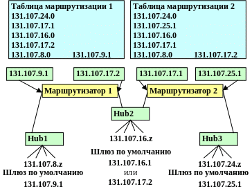

Первые маршрутизаторы представляли собой специализированное ПО, обрабатывающее приходящие IP-пакеты специфичным образом. Это ПО работало на компьютерах, у которых было несколько сетевых интерфейсов, входящих в состав различных сетей (между которыми осуществляется маршрутизация). В дальнейшем появились маршрутизаторы в форме специализированных устройств. Компьютеры с маршрутизирующим ПО называют программные маршрутизаторы, оборудование — аппаратные маршрутизаторы.
В современных аппаратных маршрутизаторах для построения таблиц маршрутизации используется специализированное ПО («прошивка»), для обработки же IP-пакетов используется коммутационная матрица (или другая технология аппаратной коммутации), расширенная фильтрами адресов в заголовке IP-пакета.
Аппаратная маршрутизация
Выделяют два типа аппаратной маршрутизации: со статическими шаблонами потоков и с динамически адаптируемыми таблицами
Статические шаблоныподразумевают разделение всех входящих в маршрутизатор IP-пакетов на виртуальные потоки;
каждый поток характеризуется набором признаков для пакета такие как:
- IP-адресами отправителя/получателя
- TCP/UDP-порт отправителя/получателя (в случае поддержки маршрутизации на основании информации 4 уровня)
- Порт, через который пришёл пакет
Оптимизация маршрутизации при этом строится на идее, что все пакеты с одинаковыми признаками должны обрабатываться одинаково (по одинаковым правилам),
при этом признаки проверяются только для первого пакета в потоке (при появлении пакета с набором признаков, не укладывающимся в существующие потоки,
создаётся новый поток), по результатам анализа этого пакета формируется статический шаблон, который и используется для определения правил коммутации
приходящих пакетов (внутри потока).
Обычно время хранения неиспользующегося шаблона ограничено (для освобождения ресурсов маршрутизатора).
Ключевым недостатком подобной схемы является инерционность по отношению к изменению таблицы маршрутизации (в случае существующего потока изменение правил
маршрутизации пакетов не будет «замечено» до момента удаления шаблона).

Пример построения таблицы маршрутизации
Динамически адаптируемые таблицы используют правила маршрутизации «напрямую», используя маску и номер сети из таблицы маршрутизации для проверки пакета
и определения порта, на который нужно передать пакет. При этом изменения в таблице маршрутизации (в результате работы, например,
протоколов маршрутизации/резервирования) сразу же влияют на обработку всех новопришедших пакетов. Динамически адаптируемые таблицы также позволяют легко
реализовывать быструю (аппаратную) проверку списков доступа.
Программная маршрутизация
Программная маршрутизация выполняется либо специализированным ПО маршрутизаторов (в случае, когда аппаратные методы не могут быть использованы,
например, в случае организации туннелей), либо программным обеспечением на компьютере. В общем случае, любой компьютер осуществляет маршрутизацию
своих собственных исходящих пакетов (как минимум, для разделения пакетов, отправляемых на шлюз по умолчанию и пакетов,
предназначенных узлам в локальном сегменте сети). Для маршрутизации чужих IP-пакетов, а также построения таблиц маршрутизации используется различное ПО:
- Сервис RRAS (routing and remote access service) в Windows Server
- Демоны routed, gated в Unix-подобных операционных системах (Linux, FreeBSD и т.д.)
Служба маршрутизации и удаленного доступа (routing and remote access service - RRAS) — интерфейс программирования приложений и серверное программное обеспечение
компании Microsoft, которое позволяет создавать приложения, обеспечивающие маршрутизацию в сетях IPv4 и IPv6, а также взаимодействие между удаленными пользователями
и сайтами посредством подключений виртуальной частной сети (VPN) или удаленного доступа. Разработчики также могут использовать RRAS для реализации протоколов маршрутизации.